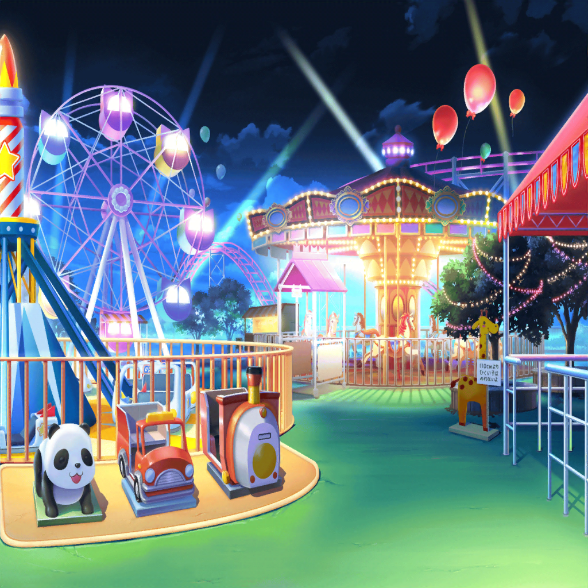
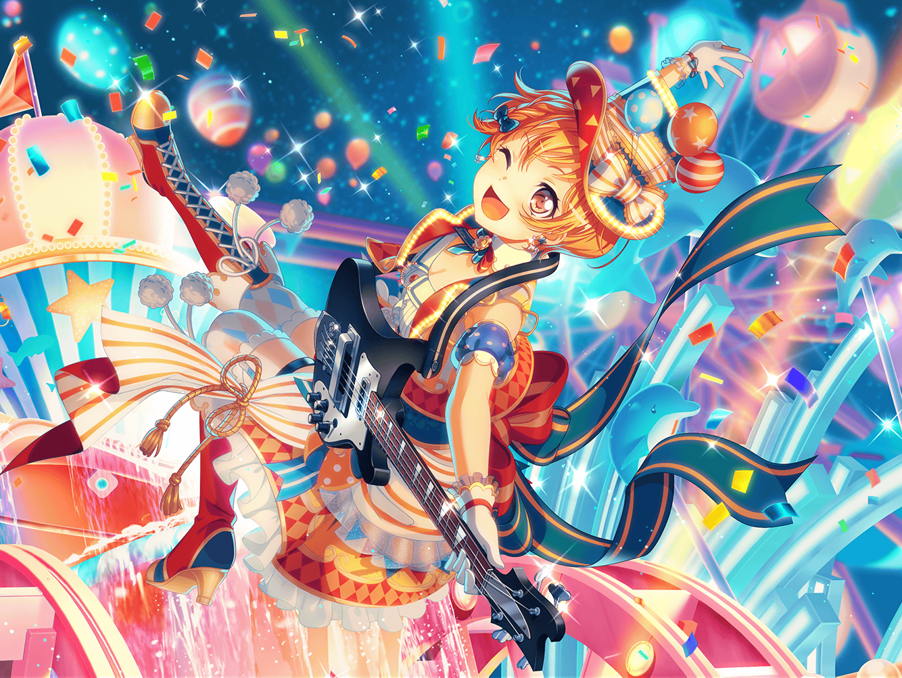
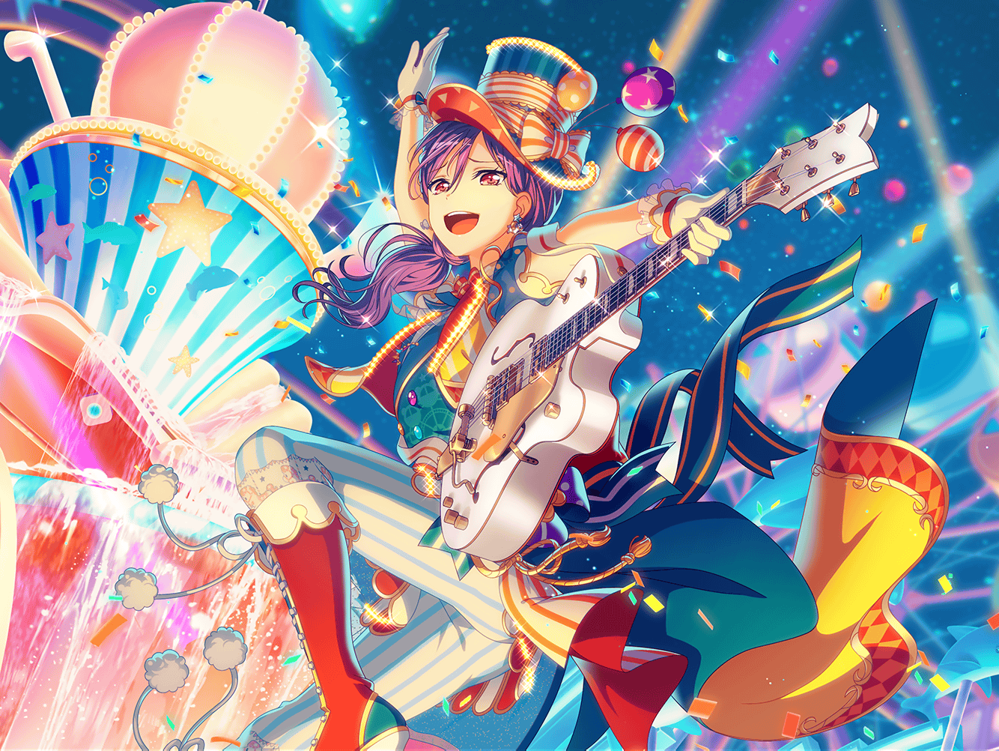
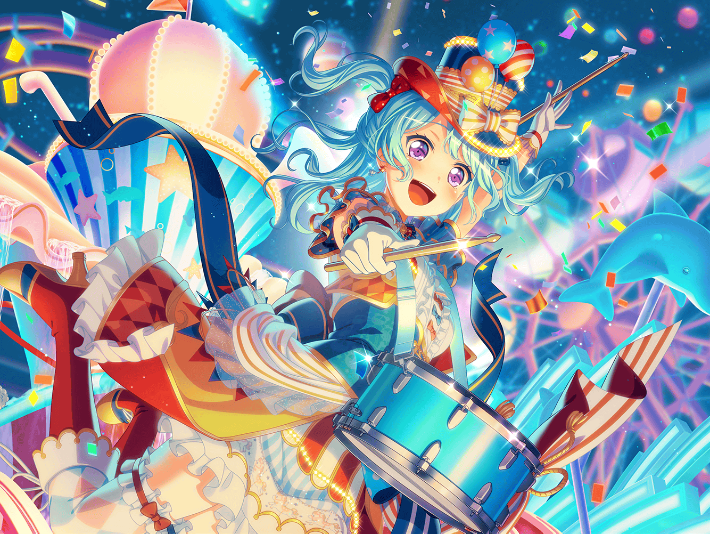
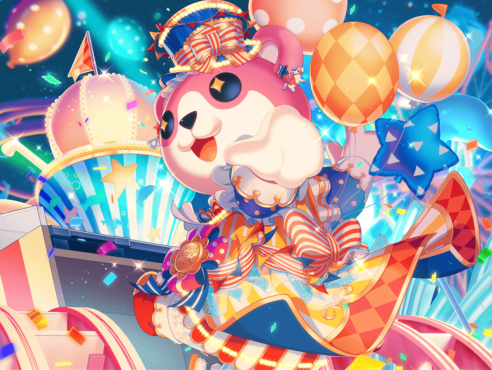
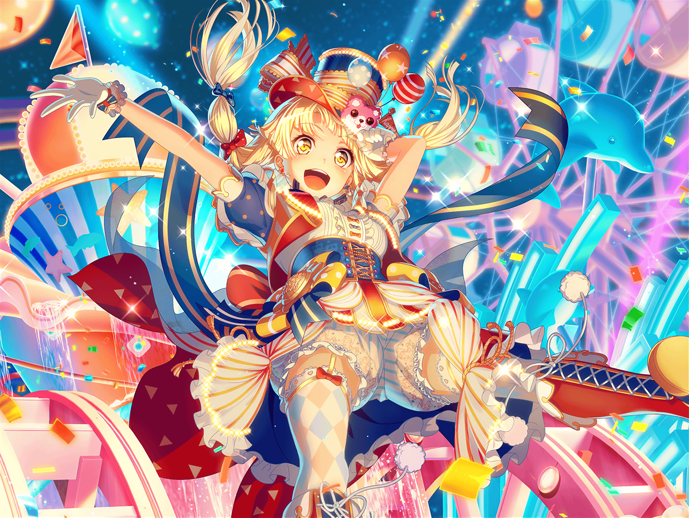
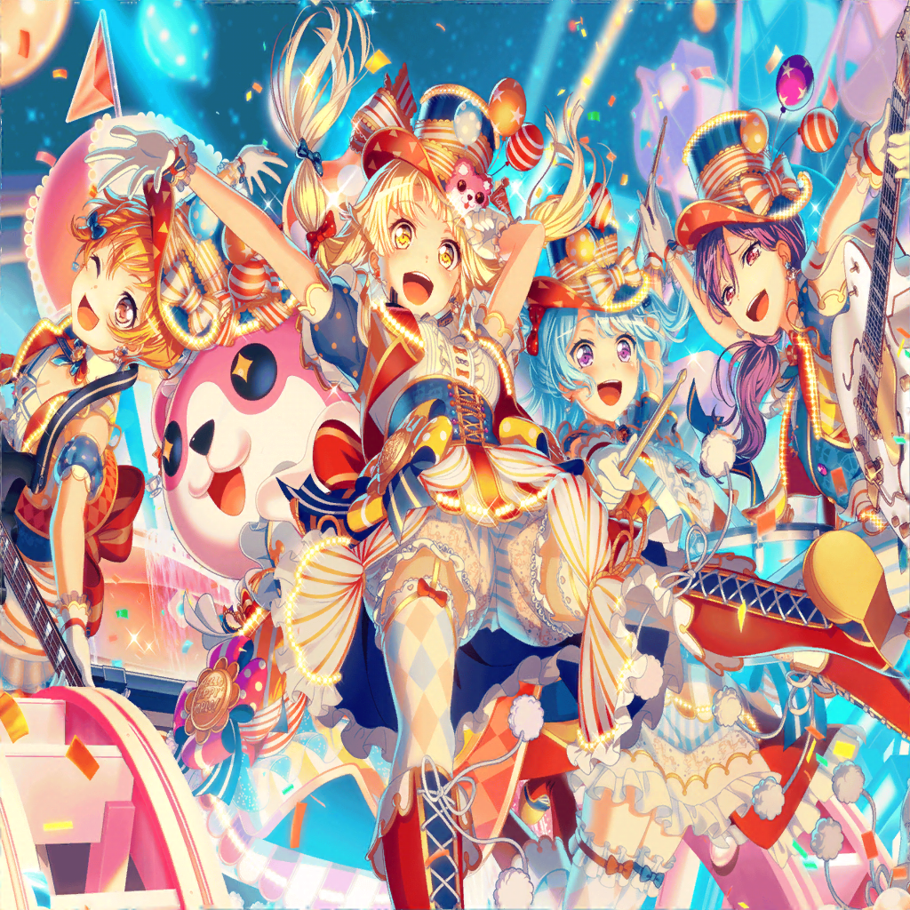

花咲川スマイル遊園地
薫
レディースアンド……
ミッシェル
ジェントルメン
こころ
ハロー、ハッピーワールド！ のパレードライブへようこそ！
薫
今宵、誘おう。めくるめく夢の世界へ！
はぐみ
今日はここにいるみんなが
花マル笑顔になれるライブをしちゃいます！
花音
き、緊張するけどがんばります……！
ミッシェル
それじゃまずは１曲目聴いてください。
『キミがいなくちゃっ！』

はぐみ
（これ、この景色！ はぐみが小さい頃に見た遊園地だ！
あの時は、はぐみを笑顔にしてくれてありがとう！
今日は、はぐみが笑顔にする番だね！）
はぐみ
（大丈夫！ はぐみに任せて！
ハロハピのみんなと一緒ならどんな場所も笑顔にできるんだ！）

薫
（湧き上がる歓喜の声と溢れる笑顔……
ああ、世界は儚さに満ちている……）
薫
（美咲。舞台の上には五人だけだが、
心はいつも君と繋がっているよ。さあ、共に奏でよう。
今宵の星空よりも眩しく輝く私達のステージだ……！）

花音
（こころちゃんに勇気をもらったことが私のハロハピの始まり。
まわりに助けてもらってばかりの私だったけど、
みんなと一緒にいて少しだけ前に進めたよ）
花音
（こころちゃんみたいにはできないけど、
私は私にできるやり方で、
もらった勇気をみんなに渡してあげたいんだ……！）

ミッシェル
（世界を笑顔に、なんてできるわけないって思ってたのに……
気がつけば、あたしもそっち側の住人になっちゃうなんてね）
ミッシェル
（でも、それも悪くないなって今は思ってる。
普通にほどほどが一番なあたしでも誰かを笑顔にできるって
言ってくれるなら、あたしもそれに応えたいからさ）

こころ
楽しいって一人じゃ生まれないの！
誰かがいなくちゃ生まれてこない素敵な気持ちなのよ！
こころ
だから、もし楽しくなりたかったら、
そばにいる誰かにあなたの楽しいをあげてみて！
きっとあなたの中にも楽しいが生まれてくるわ！
こころ
もし、それでも楽しくないっていう人がいるなら、その時は……

こころ
あたし達ハロハピに任せて！
世界を笑顔にする歌で最高の楽しいをプレゼントするわ！
来場客A
いいじゃん、スマイル遊園地！
こんな穴場の遊園地があったなんて知らなかった！
来場客B
パレードのバンド、ハロハピっていうんだ。
今度、ライブに行ってみようかな
ミッシェル
ふぅ……
花音
美咲ちゃん、お疲れさま
ミッシェル
あ、花音さん、お疲れ様です。
なんとかパレードもうまくいきましたね
花音
うん、お客さん、すっごく喜んでくれたね
花音
……でも、結局ミッシェルとして
パレードに参加したけど、よかったの？

こころ
ねっ！ 美咲もパレードに参加しましょうよ！
美咲
あー……うん、みんなありがと
美咲
わざわざ衣装まで作ってもらったのにあれだけど、
やっぱりあたしはお客さんと一緒にパレードを見るよ
花音
美咲ちゃん……
美咲
人前に出ていくタイプじゃないし、そっちのほうが気楽でいいんだ
こころ
そう。でも、いつかステージに立ちたくなったら
言ってちょうだい。待ってるわ
薫
今日はパレードが成功するように客席から見守っていておくれ
はぐみ
はぐみ達、がんばってすっごく楽しいパレードにするからねっ！
美咲
うん、見てる。ちゃんと見てるから。
みんな、がんばって
ミッシェル
……いいんです。
だって、あたしが出ちゃったら
ミッシェルが出られなくなっちゃうじゃないですか
ミッシェル
３バカはあたしとミッシェルが
同じ人だって全然わかってくれないけど……
ミッシェル
あたしはあたし、ミッシェルはミッシェルで
大切に思ってくれてるみたいなんですよね
ミッシェル
あの三人がそう思ってるなら、
その思いを守れるのはあたしだけですから
ミッシェル
ちゃんとミッシェルで応えてあげることが、
あたしにできることかなって……
花音
美咲ちゃん……
ミッシェル
すみません。
せっかく花音さんが背中を押してくれたのに……
花音
美咲ちゃんが決めたことならそれでいいよ
ミッシェル
はい。あたしに誰かを笑顔にすることができるなら、
ミッシェルだってなんだってやりきってみせますよ
ミッシェル
なんたって、世界を笑顔にするのがハロハピですからね
花音
うん、そうだね……
がんばろう、美咲ちゃん
こころ
ミッシェルー！ 花音ー！
花音
あ、みんな……
こころ
お客さんからアンコールが上がってるの！
もう一度、パレードしましょう！
ミッシェル・花音
ええっ！？
ミッシェル
パレードのアンコールって聞いたことないけど……
花音
あ、でもライブって考えたら
アンコールがあるのは自然なのかな……？
はぐみ
はぐみ、もう一回できるよ！
せっかくのイベントだもん、もう一回やろうよ！
薫
観客の期待には必ず応えるのがステージに立つ者の定めさ。
またみんなを幸せにしてあげようじゃないか
ミッシェル・花音
…………
ミッシェル
そんなにやる気になってるなら、じゃあやってやりますかー
花音
うん、さっきよりもっと楽しいパレードにしなくちゃね
はぐみ
よーし、じゃあ気合い入れようよ、こころん！
こころ
ええ、準備はいい？ 行くわよー！
こころ
世界を笑顔に！
ハロー、ハッピーワールド！
ハッピー！ ラッキー！ スマイル！ イエーイ！！